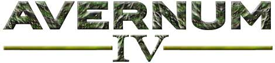

Sjedi 1! - Recenzije PC igara
Nemamo vremena za igranje igara i nismo kompetentne za ocjenjivanje... ali ćemo svejedno to uraditi!
Avernum IV
Avernum 4 je RPG demoware izašla 2003 godine i potpuno je TBS – za razliku od igre u realnom vremenu, svaki igrač čeka svoj red. Četvrti je nastavak serije Avernum. Napravljena je s novim pogonom, nastao iz Geneforge i Avernum pogona.
Radnja je smještena u istoimenom podzemnom svijetu, najveći sukob je sa nadzemnim Carstvom. Četvrti dio se značajno razlikuje od prva tri, radna je smještena daleko iza vremena prethodnih igara. Ima dosta novih grafičkih detalja. Upravlja se obično sa 4 lika. Igra je jako bogata u priči i rasama. Postoje ljudi, Nephilimi (mačke ljudi), i Slithzerikai (gušter-ljudi). Osim toga postoje različito školovani vojnici i Beerserkeri sa dobrim napadačkim vještinama. Osim toga imaju svećenici koji imaju odlične vještine za liječenje i zaštitu. Još postoje likovi s lukom i strijelom, brzi Rouge naoružani mačem i pobunjenici protiv Carstva, čarobnjaci i šamani. Moguće je uz određene vještine napraviti i lika po želji.
Svaki lik posjeduje različte vještine- bazne vještine (brzinu,snagu, izddržljivost, inteligenciju), vojne vještine (oružja i brzu akciju), magične vještine (čarolije, znanje, obredi) i općenite osobine (napad, obrana, prva pomoć, poznavanje prirode, sreća). Dostupne su i neke specijalne vještine.
Priča je podjeljenja u dijelove u kojima se ispunjavaju zadatci. Glavni zadatci su naći kapetana Matosa, naći opremu, nađi Goblinov prolaz, ubiti njihovu vođu i otići u Fort Draco. Na početku su odlično objašnjene osnove igre tako da se lako snaći. Osim redovitih zadataka ima i zadataka sa strane kao i poslova koji se mogu prihvatiti. Priča je odlična, likovi su raznoliki i mapa je ogromna. Igra završava glavnom bitkom.
Godina izdavanja: 2005
Minimalni sistemski zahtjevi:
- CPU 1.6 GHz
- 265MB RAM-a
- Win XP
- 3D GPU
- DirectX 7
Ocjena: